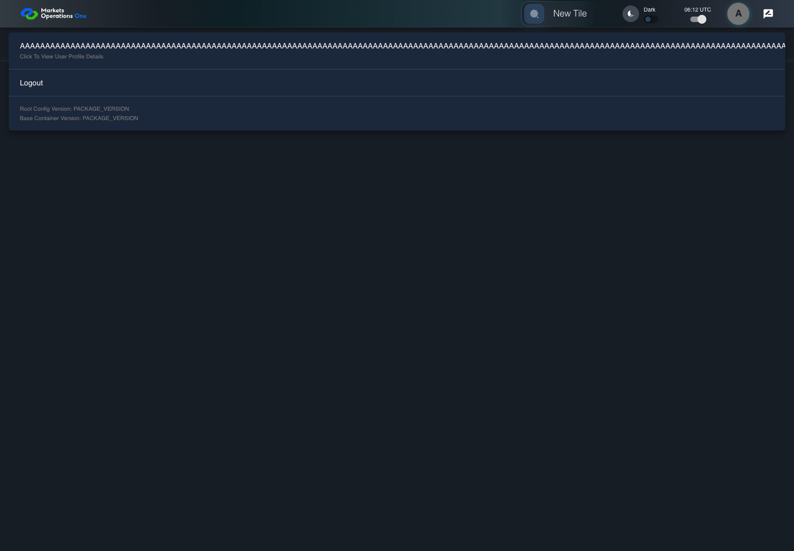
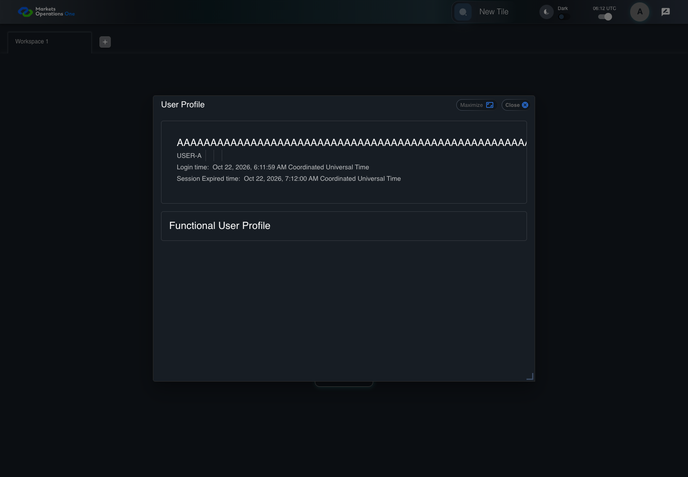

UX-049 profile or catalog resilience
PASS · application/run-050/ux-049-profile-or-catalog-resilience-c470ae5084df-attempt-1 · ACTUAL_APPLICATION_LOCAL_SERVICES
Actual React shell. Controlled catalog, user identity, photo failures, and SystemJS tenant. Chromium only. Accessibility and layout outcomes are proposed probes; no approved conformance standard is inferred.
2026-10-22T06:11:59.541Z to 2026-10-22T06:12:01.944Z
Assertions and result · Artifact manifest · Exact run inputs and source hashes
Result SHA-256:6fde1ddaeee815dd055f9f680a50d1b1c5d84d8d74b02e09c764fdc63a22dcf6Screenshot capture: CAPTURED. Named frames: 7.
Step screenshot bindings: COMPLETE. 6/6 canonical steps have execution screenshots.
Bindings measure structural coverage only. They do not establish screenshot content quality or relevance.
Screenshot content review: NOT_REVIEWED. Recorded context: 0/7 frames. Identical image bytes: 2 repeated frames. Recorded context does not establish human visual review.
Canonical step timeline
Given USER-A has fullName equal to exactly 200 letter A characters
Execution: PASSED.1. step-01 Visible state after step 1: Given USER-A has fullName equal to exactly 200 letter A characters
2026-10-22T06:12:00.844Z · 1440×1000
Step: /Users/lushevol/code/github/ratan-release-impact/workbench/tasks/ui-test-coverage-20261022/test-cases.md:13820
SHA-256:b0d8bd3f9faf25b9831e8e67fc0e92f9f9cff7591bb746b16bfcb116162ff137When USER-A clicks the icon button with test ID "${MFE_APP_PREFIX_STYLE}_avatar_IconButton" on the Home page
Execution: PASSED.
2. step-02 Visible state after step 2: When USER-A clicks the icon button with test ID "${MFE_APP_PREFIX_STYLE}_avatar_IconButton" on the Home page
2026-10-22T06:12:01.067Z · 1440×1000
Step: /Users/lushevol/code/github/ratan-release-impact/workbench/tasks/ui-test-coverage-20261022/test-cases.md:13821
SHA-256:8c1eb2de3366034af395d04cac1968816f770194caf20032ec7708ffa4c0cdf3And USER-A clicks the menu item with test ID "${MFE_APP_PREFIX_STYLE}_avatar_Profile" in the menu with identifier "menu-appbar-avatar" on the Home page
Execution: PASSED.3. step-03 Visible state after step 3: And USER-A clicks the menu item with test ID "${MFE_APP_PREFIX_STYLE}_avatar_Profile" in the menu with identifier "menu-appbar-avatar" on the Home page
2026-10-22T06:12:01.277Z · 1440×1000
Step: /Users/lushevol/code/github/ratan-release-impact/workbench/tasks/ui-test-coverage-20261022/test-cases.md:13822
SHA-256:302a967e4d66aa92820260011a12eed1cbe234f8164553c6277bc92685869b9bThen The profile name text equals the exact 200-character fixture value
Execution: PASSED.
4. step-04 Visible state after step 4: Then The profile name text equals the exact 200-character fixture value
2026-10-22T06:12:01.357Z · 1440×1000
Step: /Users/lushevol/code/github/ratan-release-impact/workbench/tasks/ui-test-coverage-20261022/test-cases.md:13823
SHA-256:75c9a4c3296d6b0c4196769284f5d15974ca1d3394bb8927a0486f616fa097a0And The complete profile name is visible through wrapping or scrolling
Execution: PASSED.
5. step-05 Visible state after step 5: And The complete profile name is visible through wrapping or scrolling
2026-10-22T06:12:01.423Z · 1440×1000
Step: /Users/lushevol/code/github/ratan-release-impact/workbench/tasks/ui-test-coverage-20261022/test-cases.md:13824
SHA-256:75c9a4c3296d6b0c4196769284f5d15974ca1d3394bb8927a0486f616fa097a0Image bytes match frame 4. An unchanged image can be valid for consecutive assertions. This match does not establish correct step content.
And The chip labelled "Close" in the dialog with title text "User Profile" on the Home page is visible and enabled
Execution: PASSED.6. step-06 Visible state after step 6: And The chip labelled "Close" in the dialog with title text "User Profile" on the Home page is visible and enabled
2026-10-22T06:12:01.506Z · 1440×1000
Step: /Users/lushevol/code/github/ratan-release-impact/workbench/tasks/ui-test-coverage-20261022/test-cases.md:13825
SHA-256:6ec0fdbd8595bb4997874004a5b7edd3ef81ec7da3a197c3387870efdf7330b9
Additional named frames

The final visible state after the named test assertions.
2026-10-22T06:12:01.620Z · 1440×1000Step: Test source: /Users/lushevol/code/github/ratan-release-impact/workbench/e2e/audit-specs/ux-shell.spec.ts:153
SHA-256:
6ec0fdbd8595bb4997874004a5b7edd3ef81ec7da3a197c3387870efdf7330b9Image bytes match frame 6. An unchanged image can be valid for consecutive assertions. This match does not establish correct step content.
Screenshots establish visible state only. Assertions and traces support functional claims.